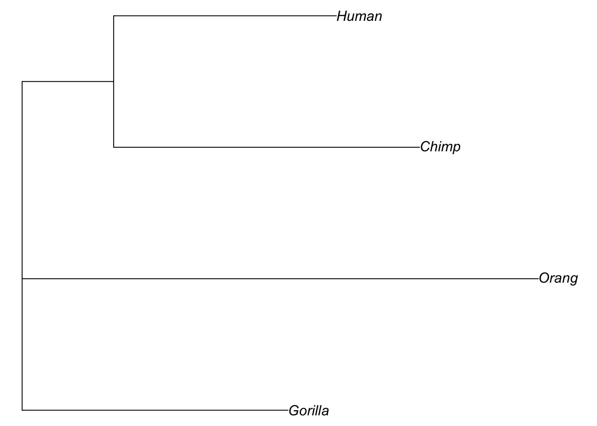

9.1 Phylogenetics in R
R has a number of extremely powerful packages for performing phylogenetic analysis, from plotting trees to testing comparative models of evolution. You can see here for more information if you are interested in learning about what sort of things are possible. For today’s session, we will learn how to handle and visualise phylogenetic trees in R. We will also construct a series of trees from a sequence alignment. First, let’s familiarise ourselves with how R handles phylogenetic data.
9.1.1 Storing trees in R
The backbone of most phylogenetic analysis in R comes from the functions that are part of the ape package. ape stores trees as phylo objects, which are easy to access and manipulate. The easiest way to understand this is to have a look at a simple phylogeny, so we’ll create a random tree now.
# set seed to ensure the same tree is produced
set.seed(32)
# generate a tree
tree <- rtree(n = 4, tip.label = c("a", "b", "c", "d"))What have we done here? First, the set.seed function just sets a seed for our random simulation of a tree. You won’t need to worry about this for the majority of the time, here we are using it to make sure that when we randomly create a tree, we all create the same one.
What you need to focus on is the second line of code that uses the rtree function. This is simply a means to generate a random tree. With the n = 4 argument, we are simply stating our tree will have four taxa and we are already specifying what they should be called with the tip.label argument.
Let’s take a closer look at our tree object. It is a phylo object - you can demonstrate this to yourself with class(tree).
tree
#>
#> Phylogenetic tree with 4 tips and 3 internal nodes.
#>
#> Tip labels:
#> c, a, d, b
#>
#> Rooted; includes branch lengths.By printing tree to the console, we see it is a tree with 4 tips and 3 internal nodes, a set of tip labels. We also see it is rooted and that the branch lengths are stored in this object too.
You can actually look more deeply into the data stored within the tree object if you want to. Try the following code and see what is inside.
str(tree)
objects(tree)
tree$edge
tree$edge.lengthIt is of course, much easier to understand a tree when we visualise it. Luckily this is easy in R.
plot(tree)In the next section, we will learn more about how to plot trees.
9.1.2 Plotting trees
We can do a lot with our trees in R using a few simple plot commands. We will use some of these later in the tutorial and assignment, so here’s a quick introduction of some of the options you have.
First, let’s generate another random tree, this time with 5 taxa.
# set seed to ensure the same tree is produced
set.seed(32)
# generate a tree
tree <- rtree(n = 5, tip.label = c("a", "b", "c", "d", "e"))Now, try modifying the appearance of the tree using some of these arguments to plot():
use.edge.length(TRUE(default) orFALSE): should branch length be used to represent evolutionary distance?type: the type of tree to plot. Options include “phylogram” (default), “cladogram”, “unrooted” and “fan”.edge.width: sets the thickness of the branchesedge.color: sets the color of the branches
See ?plot.phylo for a comprehensive list of arguments.
You can also manipulate the contents of your tree:
drop.tip()removes a tip from the treerotate()switches places of two tips in the visualisation of the tree (without altering the evolutionary relationship among taxa)extract.clade()subsets the tree to a given clade
See the help pages for the functions to find out more about how they work. Now, let’s use some of the options we’ve learned here for looking at some real data.
9.1.3 A simple example with real data - avian phylogenetics
So far, we have only looked at randomly generated trees. Let’s have a look at some data stored within ape—a phylogeny of birds at the order level.
# get bird order data
data("bird.orders")Let’s plot the phylogeny to have a look at it. We will also add some annotation to make sense of the phylogeny.
# no.margin = TRUE gives prettier plots
plot(bird.orders, no.margin = TRUE)
segments(38, 1, 38, 5, lwd = 2)
text(39, 3, "Proaves", srt = 270)
segments(38, 6, 38, 23, lwd = 2)
text(39, 14.5, "Neoaves", srt = 270)
Here, the segments and text functions specify the bars and names of the two major groups in our avian phylogeny. We are just using them for display purposes here, but if you’d like to know more about them, you can look at the R help with ?segments and ?text commands.
Let’s focus on the Neoaves clade for now. Perhaps we want to test whether certain families within Neoaves form a monophyletic group? We can do this with the is.monophyletic function.
# Parrots and Passerines?
is.monophyletic(bird.orders, c("Passeriformes", "Psittaciformes"))
#> [1] FALSE
# hummingbirds and swifts?
is.monophyletic(bird.orders, c("Trochiliformes", "Apodiformes"))
#> [1] TRUEIf we want to look at just the Neoaves, we can subset our tree using extract.clade(). We need to supply a node from our tree to extract.clade, so let’s find the correct node first. The nodes in the tree can be found by running the nodelabels() function after using plot():
plot(bird.orders, no.margin = TRUE)
segments(38, 1, 38, 5, lwd = 2)
text(39, 3, "Proaves", srt = 270)
segments(38, 6, 38, 23, lwd = 2)
text(39, 14.5, "Neoaves", srt = 270)
nodelabels()
We can see that the Neoaves start at node 29, so let’s extract that one.
# extract clade
neoaves <- extract.clade(bird.orders, 29)
# plot
plot(neoaves, no.margin = TRUE)
The functions provided by ape make it quite easy to handle phylogenies in R, feel free to experiment further to find out what you can do!
9.1.4 Constructing trees with R
So far, we have only looked at examples of trees that are already constructed in some way. However, if you are working with your own data, this is not the case - you need to actually make the tree yourself. Luckily, phangorn is ideally suited for this. We will use some data, bundled with the package, for the next steps. The following code loads the data:
# get phangorn primates data
fdir <- system.file("extdata/trees", package = "phangorn")
primates <- read.dna(file.path(fdir, "primates.dna"), format = "interleaved")This is a set of 14 mitochondrial DNA sequences from 12 primate species and 2 outgroups - a mouse and a cow. The sequences are 232 basepairs long. The data is originally from this paper and is a well-known example dataset in phylogenetics.
We have seen the structure this data is stored in before - it is a DNA.bin object like we worked with in Chapter 7.
Print primates to your screen and have a look at it. For the next section, we will use just four species - the hominidae (i.e. Orangutan, Gorilla, Chimpanzee and Human). Let’s subset our data in order to do that.
# subset data to get hominidae
hominidae <- primates[11:14, ]We also need to convert our dataset so that phangorn is able to use it properly. The package uses a data structure called phyDAT. Luckily conversion is very easy indeed:
# convert data
hominidae <- as.phyDat(hominidae)We are going to create two types of trees - UPGMA and Neighbour Joining. These are distance based measures and so we must first make a distance matrix among our taxa, which requires a substitution model. The default substitution model is the Jukes & Cantor model, but we can also use Felsenstein’s 1981 model. Which is the best to apply here? To find that out, we should first test the different models using modelTest:
# perform model selection
hominidae_mt <- modelTest(hominidae, model = c("JC", "F81"), G = FALSE, I = FALSE)
#> [1] "JC"
#> [1] "F81"Take a look at the hominidae_mt table. What we have done here is performed a maximum likelihood analysis and a form of model selection to determine which of the two models we tested - JC69 and F81 (specified by model = c("JC", "F81")) best fits our data. We also set G and I to false in order to simplify the output. Don’t worry too much about what these are for now, but feel free to use ?modelTest if you wish to learn more.
Anyway, how can we interpret this table? Well, we are looking for the model with the log likelihood closest to zero and also the lowest value of AIC (Akaike information criterion - see here for more information). In this case, it is clear that F81 is a better fit for the data than the JC model, so we will calculate our distance matrix with this model instead.
We can now calculate evolutionary distance using dist.ml - a function that compares pairwise distances among sequences the substitution model we chose.
# first generate a distance matrix
hominidae_dist <- dist.ml(hominidae, model = "F81")Take a look at hominidae_dist. You will see it is a matrix of the distance or difference between the sequences. The distances are based on the number of nucleotide substitutions, and the actual values depend on the model we use—here, the F81. It is not straightforward to interpret how much the groups differ from the numbers directly, but in general, the larger the number the greater the genetic distance.
Next we can create our trees. For an UPGMA tree, we use the upgma function:
# upgma tree
hom_upgma <- upgma(hominidae_dist)Next we will make a neighbour joining tree. This is easily done with the NJ function.
# NJ tree
hom_nj <- NJ(hominidae_dist)Now that we have created both of our trees, we should plot them to have a look at them.
# plot them both
par(mfrow = c(2, 1)) # 2 plots in same window
plot(hom_upgma, no.margin = TRUE)
plot(hom_nj, type = "unrooted", no.margin = TRUE)
par(mfrow = c(1,1)) # reset mfrow
Note that when we plot the NJ tree, we add an extra argument to get an unrooted tree. The default in R is to plot rooted trees, but since the neighbour joining algorithm produces an unrooted phylogeny, the correct way to plot it is unrooted.
We can verify that the tree is unrooted (compared to the UPGMA tree) using the is.rooted() function.
# check whether the tree is rooted
is.rooted(hom_nj)
is.rooted(hom_upgma)We can also set a root on our tree, if we know what we should set the outgroup to. In this case, we can set our outgroup to Orangutan, because we know it is the most divergent from the clade that consists of humans, chimps and gorillas.
We will set the root of our neighbour joining tree below using the root function and we’ll then plot it to see how it looks.
# plot nj rooted
hom_nj_r <- root(hom_nj, "Orang")
plot(hom_nj_r, no.margin = TRUE)
In this case, it hasn’t actually made a huge difference to our tree topology, but with a larger dataset, it might do.
As a final point here, we might want to try and compare our two trees and see which we should accept as the best model for the evolutionary relationships among our taxa. One way to do this is to use the parsimony score of a phylogeny. Essentially, the lower the parsimony score is for a tree, the more parsimonious explanation of the data it might be. This is very easy to achieve with the parsimony function.
# calculate parsimony
parsimony(hom_upgma, hominidae)
parsimony(hom_nj_r, hominidae)For the parsimony function, the first argument is the tree, the second is the data. Here we can see that both parsimony scores are equal for the two trees, suggesting that they are both equivalent models of the evolutionary relationships among the taxa we are studying here.
If you test the parsimony score for the rooted and the unrooted NJ tree, you will see that they are the same. It is important to note that this is not usually the case! Choosing an outgroup will normally change the tree length, and therefore the parsimony score.